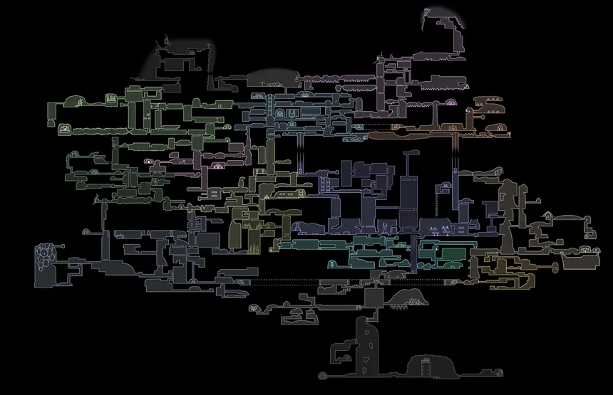
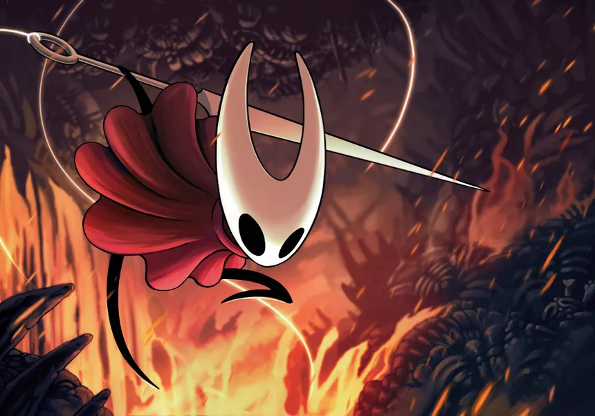
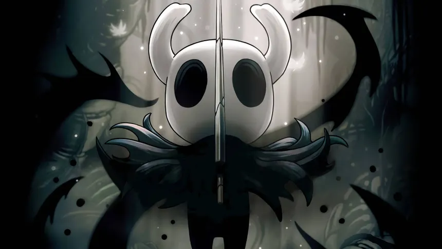

Sobre el Juego
Hollow Knight es un videojuego de acción y aventura tipo metroidvania desarrollado por Team Cherry. Fue lanzado en 2017 para Windows, y más tarde para macOS, Linux, Nintendo Switch, PlayStation 4 y Xbox One. El jugador controla a un enigmático guerrero insectoide conocido como El Caballero, que explora el vasto y decadente reino subterráneo de Hallownest.
El juego destaca por su impresionante arte dibujado a mano, su música atmosférica y su profunda narrativa ambiental. Los jugadores descubren la historia a través de los escenarios, inscripciones y los pocos habitantes sobrevivientes del reino.
Historia
En los tiempos antiguos, Hallownest fue un próspero reino habitado por diversas especies de insectos inteligentes. Sin embargo, una misteriosa infección conocida como la Radiance comenzó a propagarse, corrompiendo las mentes de sus habitantes.
Para contener la plaga, el Rey Pálido selló a la Radiance dentro de un receptáculo vacío —el Hollow Knight. Pero con el paso del tiempo, el sello se debilitó, y la infección volvió a emerger. El jugador, como el Caballero, debe adentrarse en las profundidades para descubrir su propia naturaleza y el destino del reino perdido.
Jugabilidad
Hollow Knight ofrece un extenso mundo interconectado lleno de secretos, enemigos y desafíos. La exploración es libre y se desbloquean nuevas áreas al obtener habilidades y herramientas.
- Combate ágil: utiliza el Aguijón para atacar, esquivar y usar hechizos.
- Exploración: descubre nuevas rutas, pasadizos y zonas ocultas.
- Amuletos: equipa encantamientos que modifican las habilidades del Caballero.
- Desafíos: enfrenta jefes únicos y enemigos cada vez más poderosos.
Personajes Principales
El mundo de Hollow Knight está poblado por fascinantes personajes que aportan profundidad a la historia. Algunos de los más importantes son:
- El Caballero: el protagonista silencioso del juego, portador del aguijón.
- Hornet: guardiana de Hallownest, hábil y veloz en combate.
- El Rey Pálido: antiguo gobernante de Hallownest.
- Radiance: una deidad antigua y fuente de la infección.
Galería



Trailer Oficial
Disfruta del trailer oficial del juego desarrollado por Team Cherry:
Formulario de Contacto
Completa el siguiente formulario para compartir tu opinión o solicitud relacionada con Hollow Knight: